150 Years of Women at UCSF
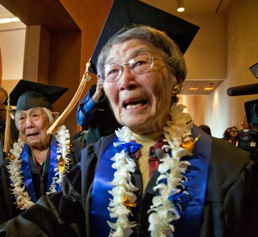
Aiko (Grace) Obata Amemiya
Amemiya was a nursing student at UCSF in 1942 when she and her family were forcibly detained in an Arizona internment camp alongside thousands of other Japanese Americans and Japanese nationals. In 2009, Amemiya was instrumental in persuading UC Regents to grant honorary degrees to the 700 UC students who were denied education due to their internment during World War II.
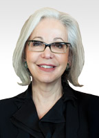
Nancy Ascher, MD, PhD
The first woman to perform a liver transplant, Ascher established the liver-transplantation program at UCSF and was the first woman to chair the Department of Surgery. An author of many scientific papers, she served on Presidential and Surgeon General task forces for organ transplantation and donation and was named one of "America's Top Doctors" by U.S. News.
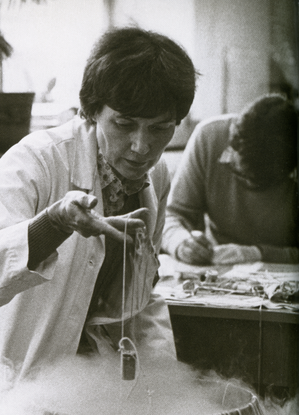
Dorothy Ford Bainton, MD
Bainton was the first woman to chair a department in the UCSF School of Medicine's Department of Pathology, and later became the Vice Chancellor of Academic Affairs. Her research focused on the development and function of white blood cells in defense against infection.
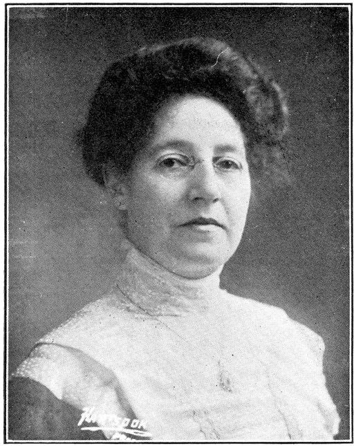
Josephine Eugenia Barbat, PhG, MD
In 1884, Barbat was the first female graduate of UCSF's College of Pharmacy. She became its first female instructor. In 1903, she graduated from the School of Medicine.
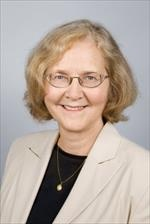
Elizabeth H. Blackburn, PhD
An expert in the study of telomeres — the part of chromosomes essential to preserving genetic information — Blackburn won the 2009 Nobel Prize in Physiology or Medicine for her work. At UCSF, she has served as Department Chair of the Department of Microbiology and Immunology. In 2007 she was named one of TIME Magazine’s 100 Most influential People.
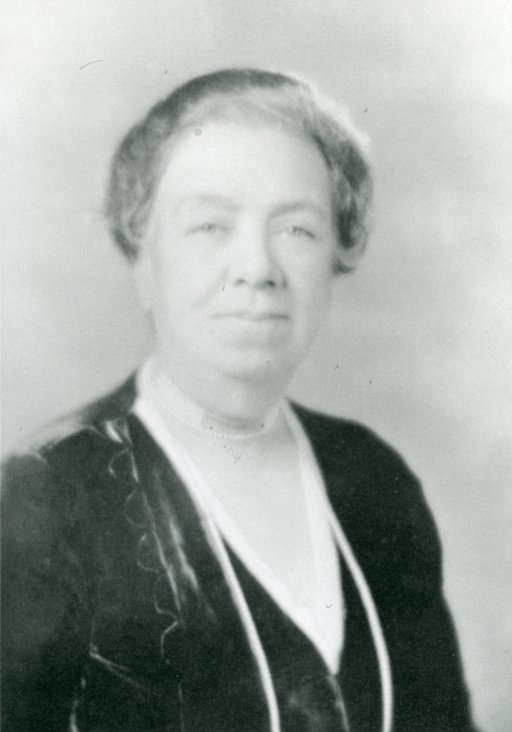
Mary Botsford, MD
A pioneer in the use of anesthesia, Botsford in 1897 became the first physician on the West Coast known to practice its use. Her career included many such firsts, including championing the law that required anesthesia be taught in medical schools. In 1932, she became the first faculty member and clinical professor of anesthesia at UC.
Maria Angelina Burch, DDS
The first female graduate of the College of Dentistry (later the UCSF School of Dentistry), Burch established her own private practice in San Francisco in 1884.
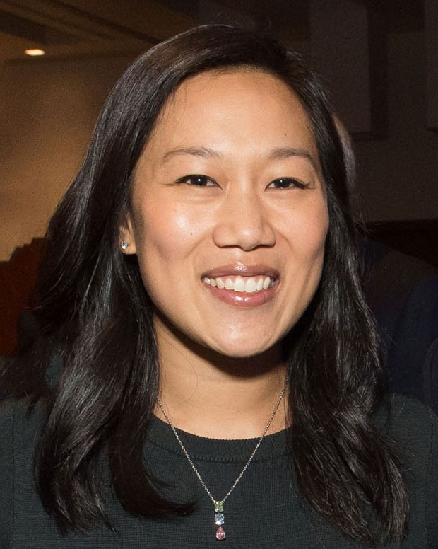
Priscilla Chan, MD
Chan is a pediatrician who earned her medical degree at UCSF, and an entrepreneur focused on children's issues. With her husband Mark Zuckerberg, she co-founded the $1 billion Chan-Zuckerberg Initiative, which supports science research and education.
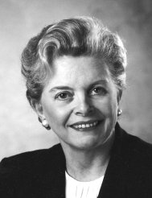
Shirley Chater, PhD, RN, FAAN
A former UCSF professor and vice chancellor, Chater was named a "Living Legend" by the American Academy of Nursing for her contributions to the field. She also served as Commissioner of the U.S. Social Security Administration during the Clinton administration.
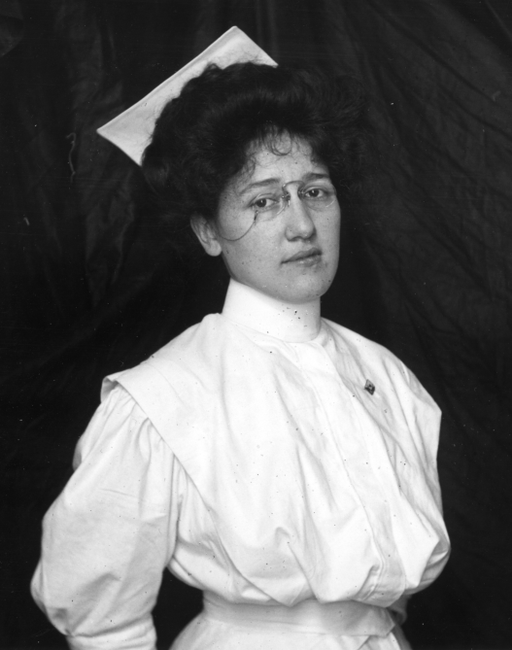
Lillian Cohen, RN
In 1909, Cohen became the first female graduate of the Training School for Nurses, which was created only two years before.
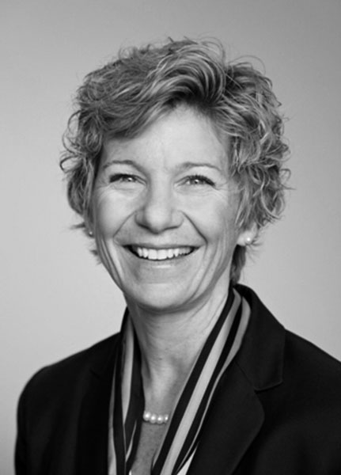
Sue Desmond-Hellmann, MD, MPH
A UCSF alumna, Desmond-Hellmann served as the university's ninth chancellor and the first woman to hold that post. During her tenure, she co-led a National Academy of Sciences Committee that recommended the creation of an extensive data network to revolutionize medical discovery, diagnosis and treatment, coining the term “precision medicine.”
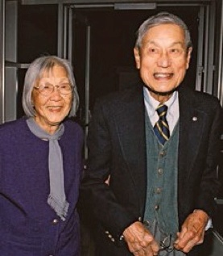
Emma O. Dong (Chong), MD
The world’s first Chinese woman ophthalmic surgeon, she earned her UCSF medical degree in 1939 and was the first woman accepted to the residency program in the Department of Ophthalmology.
Laura Esserman, MD, MBA
Esserman's breast cancer research, she says, "spans the spectrum from public policy issues to basic science and the impact of both on the delivery of clinical care." The Director of the Breast Care Center and the Clinical Leader of the NCI-designated Breast Oncology Program. she was named one of TIME's 100 Most Influential People in the World in 2016.
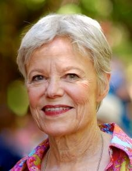
Carroll Estes, PhD, FAAN
A founding scholar and policymaker in the field of “political economy of aging," Estes also launched the Aging Health Policy Center at UCSF, which later became the Institute for Health and Aging.
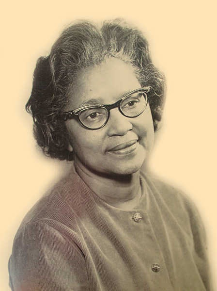
Ella Mae Ferneil, RN
Working against discriminatory hiring practices, Ferneil moved to the Bay Area after World War II and became the first African American registered nurse, public health nurse, visiting nurse, and school nurse in the state of California.
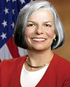
Julie Gerberding, MD, MPH
A former associate professor of medicine at UCSF and physician at San Francisco General Hospital, Gerberding in 2002 became the first female director of the Centers for Disease Control and Prevention.
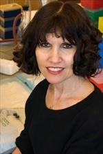
Kathy Giacomini, PhD
Giacomini's research into membrane transporters has had profound implications for drug delivery and response. One of her team's goals is improving drug design for patients who do not respond to standard treatments.
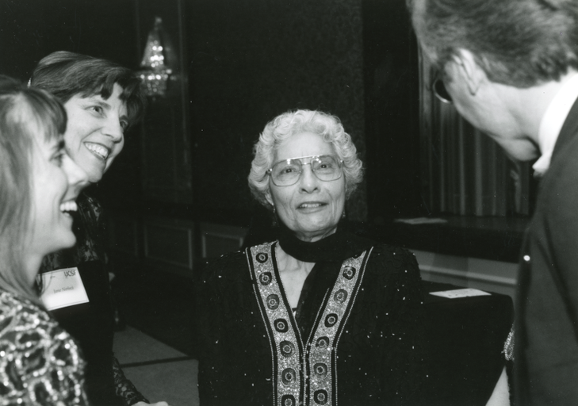
Sarah Gomez Erlach, RN
Gomez Erlach was a UCSF School of Nursing alumna who developed public health services for migrant farm workers in California. Her advocacy led to the development of primary care in the state, with a focus on community participation. During World War II, she helped establish medical-nursing care services for nine reserve hospitals and was later chief nurse of two army hospitals in Oakland and the Presidio.
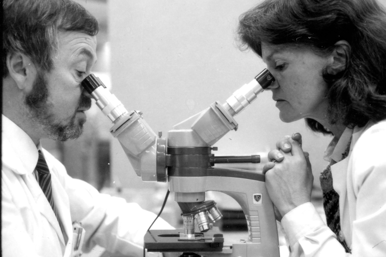
Deborah Greenspan, DSc, BDS
Greenspan's research Identified oral lesions as one of the first signs of AIDS, a breakthrough in the oral aspects of AIDS and the role of viruses in oral lesions. She is Clinical Director of UCSF's Oral AIDS Center and Chair of the Department of Orofacial Sciences at the School of Dentistry.
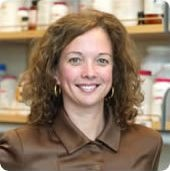
Victoria Hale, PhD
Hale is a School of Pharmacy alumnus in pharmaceutical chemistry. She is founder and CEO of One World Health, the first non-profit pharmaceutical company in the U.S. Its purpose is to develop affordable medicines for people in the developing world. Her work led to her being named a MacArthur Fellow in 2006.

Diane Havlir, MD
A UCSF resident alumna, she co-authored the “Washington D.C. Declaration,” a nine-point plan to end the AIDS epidemic. In 2013, she co-founded San Francisco’s Getting to Zero Coalition, which aims to help the city reach zero new HIV infections, zero stigma, and zero deaths by 2020.
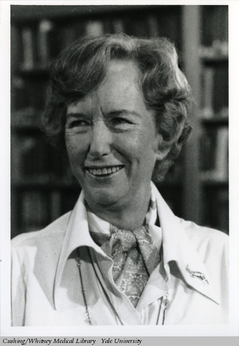
Dorothy Horstmann, MD
Horstmann earned her medical degree from UCSF in 1940. She went on to become the first woman appointed as a professor at the Yale School of Medicine. Her research on the spread of poliovirus in the bloodstream helped in the development of the polio vaccine.
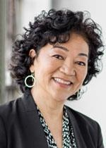
Nola Hylton, PhD
Hylton pioneered using MRI for the detection, diagnosis, and staging of breast cancer. A leader in the field of breast MRI, she is a Professor in Residence in UCSF's Department of Radiology and Biomedical Imaging, and Director of the Breast Imaging Research Group.
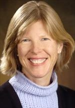
Cynthia Kenyon, PhD
An authority on the science of aging, molecular biologist Kenyon's research into longevity discovered genes that doubled the lifespan of the roundworm C. elegans. She is now the director of the Hillblom Center for the Biology of Aging at UCSF.
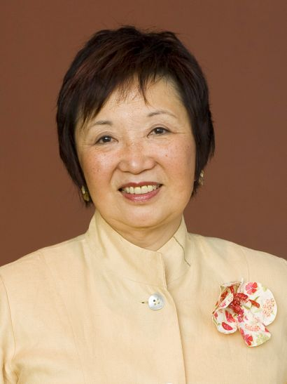
Mary Anne Koda-Kimble, PharmD
A UCSF alumna and author, Koda-Kimble was the first female dean of the School of Pharmacy. During her tenure, she increased the school's faculty by more than 25 percent and increased funding from the National Institutes of Health from $4 million to $27 million per year.
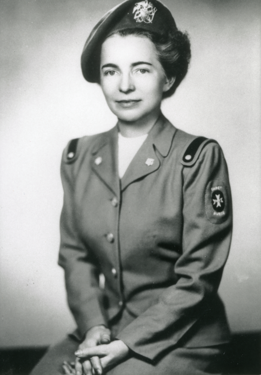
Lucile Petry Leone
A School of Nursing professor emerita who was the founding director of the Cadet Nurse Corps, Leone's organization supported the U.S. Armed Forces in World War II. She was also the first woman — and the first nurse — to serve as the U.S. assistant surgeon general.
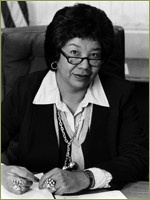
Joanne Lewis
A co-founder of the UCSF Black Caucus, Lewis was also California’s first director of Fair Employment and Housing in the administration of Governor Jerry Brown. In 1998, she received the UCSF Medal, the university's highest award.
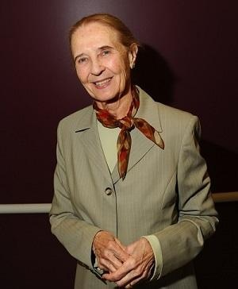
Marilyn Reed Lucia, MD
Lucia was the first woman division chief in a medical department at UCSF: In 1985 she was named chief of the Division of Pediatric Immunology and Rheumatology. She also served as the first chair of the Chancellor’s Advisory Committee on Child Care. Her groundbreaking work led to the development of the statewide University of California child care system.
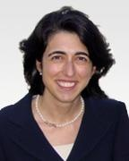
Tippi MacKenzie, MD
MacKenzie's research focuses on treating fetal conditions before birth. She led the world’s first clinical trial using blood stem cells transplanted prior to birth, leading to the successful live birth of an infant with a normally fatal condition called alpha thalassemia.
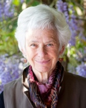
Gail Martin, PhD
Martin was one of the co-discoverers of embryonic stem cells in mice (for which she coined the term "embryonic stem cells"). Her research laid the groundwork for worldwide research on human embryonic stem cells to treat disease.
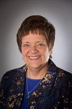
Christine Miaskowski, RN, PhD, FAAN
An expert on chronic pain as a condition rather than just a symptom, Miaskowski helped develop improved pain-management strategies. She was also the first nurse scientist to be named an American Cancer Society Clinical Research Professor.
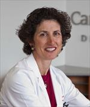
Nancy Milliken, MD & Rita Redberg, MD, MS
Milliken, an expert on reproductive health, is founding director of the National Center of Excellence on Women's Health. Redberg, a cardiologist, studies the regulatory process for medical devices and is Editor-in-Chief of JAMA Internal Medicine.
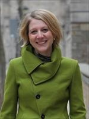
Ulrike Muench, RN, PhD, FAAN
A School of Nursing faculty member who was the first to publish a study illuminating the pay gap between male and female RNs.
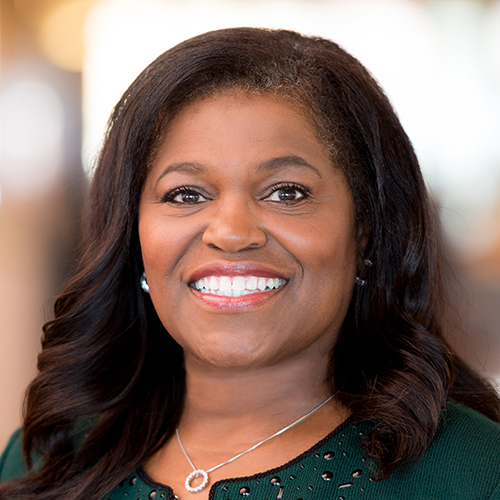
Renee Navarro, MD, PharmD
The first vice chancellor of Diversity and Outreach at UCSF and first UCSF Director of Academic Diversity, Navarro led the development of the university's diversity initiatives. She also served as perioperative medical director and chief of staff at San Francisco General Hospital.
Virginia Olesen, PhD
Oleson's groundbreaking research on the importance of gender-based health care was instrumental in shaping the field of women's health. Her sociological work focused on gender issues, nursing, and the "gig economy" decades before it became a mainstream issue.
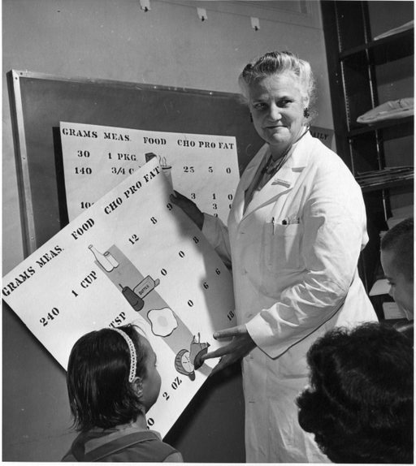
Mary Olney, MD
Olney was a female pediatrician, social advocate, and co-creator and director of the Diabetic Youth Foundation (DYF) and its summer camps for diabetic children. She founded Camp Whitaker and Bearskin Meadow Camp, wilderness camps in California for children with diabetes.
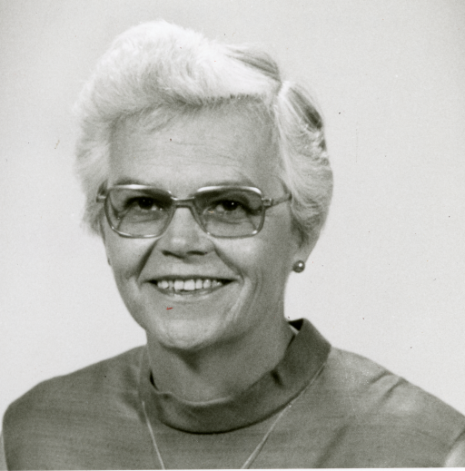
Jacquelin Perry, MD
A polio specialist and pioneer in the field of orthopedic surgery, Perry was one of the first 10 women orthopedic surgeons in the country. She was the first woman to graduate from the UCSF Orthopaedic Surgery Residency Program in 1954. In 1966, she was one of 35 spine specialists, and the only woman, to establish the Scoliosis Research Society.
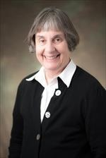
Jennifer Puck, MD
An authority in the field of immunology, Puck 's research into human immune disorders led to the development of a newborn screening test for severe combined immunodeficiency (SCID). She directs the UCSF Jeffrey Modell Diagnostic Center for Primary Immunodeficiencies.
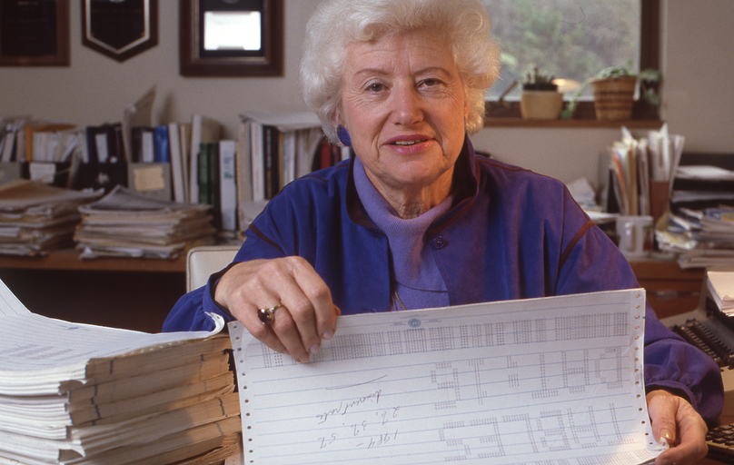
Dorothy Rice
A School of Nursing professor emerita, Rice was a pioneer in health economics and statistics whose work led to the creation of Medicare. As director of the National Center for Health Statistics, she also created the National Death Index.
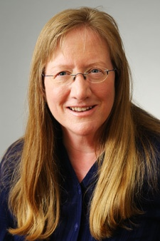
Shane Snowdon, MA
In 1999, Snowdon founded and led the Center for LGBT Health and Equity at UCSF, for 14 years the nation’s only LGBT office in a health care or health education setting. She also helped develop Human Rights Campaign’s Healthcare Equality Index (HEI), the annual U.S. hospital “scorecard," now used annually by nearly 700 hospitals nationwide to measure how well they are serving LGBT people.
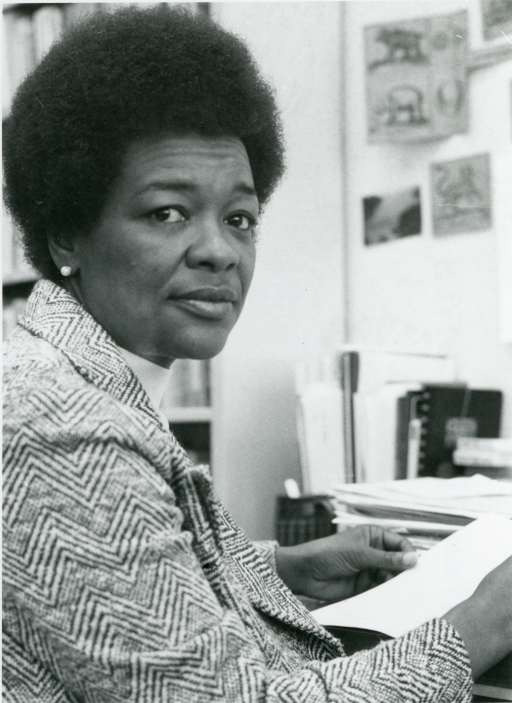
Florence Stroud, RN
Stroud was the first African American to serve as health director for Berkeley. A former UCSF professor, she authored guidelines concerning the prevention of prenatal transmission of HIV and the care of mothers and children infected with AIDS.
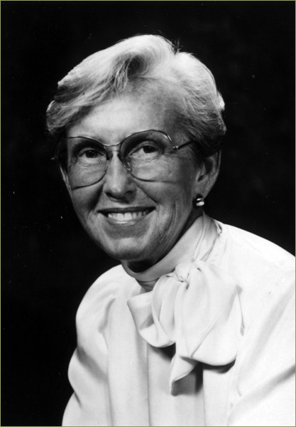
Margretta Madden Styles, RN, EdD, FAAN
Styles conceived and helped establish the national standards for certifying and credentialing nurses in pediatrics, cardiology, and other specialties. She held numerous leadership positions as well, including dean and professor of the School of Nursing, past president of the American Nurses Association, and the first American to serve as president of the International Council of Nurses.
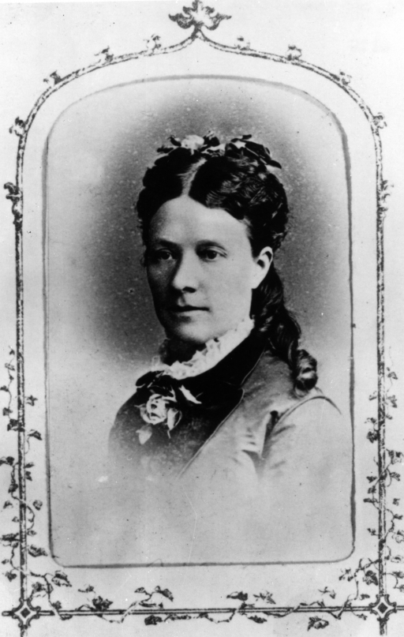
Lucy Field Wanzer, MD
A pioneer for women in medicine, in 1876 she became the first female graduate of the Medical Department of the University of California, which later became UCSF.

Diane Wara, MD
Wara was the first associate dean for women’s affairs at any medical school, and the first woman fellow in allergy-immunology at UCSF. In the early 1980s she was on the team that first identified HIV-positive babies.
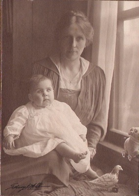
Mabel Weed
A social worker and pioneering public-health nurse, she worked with many social-welfare organizations in the Bay Area. With Berta Wright, she founded Children’s Hospital Oakland, which is now UCSF Benioff Children's Hospital Oakland.
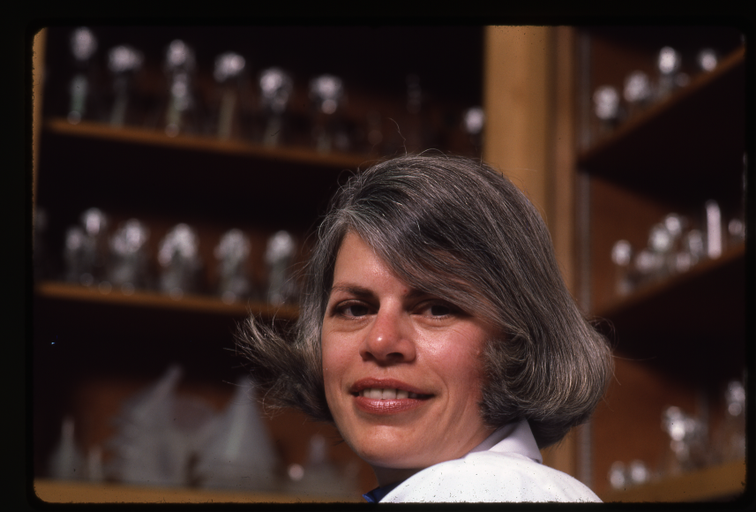
Constance (Connie) Wofsy, MD
A leader in the fight against HIV/AIDS, Wofsy was co-founder of the first-in-the-country outpatient clinic for AIDS patients at San Francisco General Hospital. The UCSF professor of medicine also created a program to train AIDS caregivers around the world.
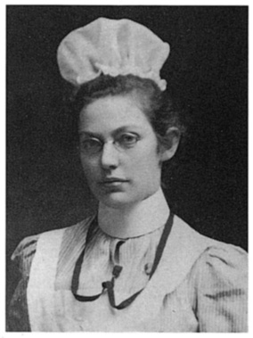
Berta Wright
A nursing pioneer who treated patients in a tent in Golden Gate Park after the 1906 San Francisco earthquake, Wright was the first school nurse in Alameda County, and the first Alameda County public health nurse. With Mabel Weed, she founded Children's Hospital Oakland, which is now UCSF Benioff Children's Hospital Oakland.